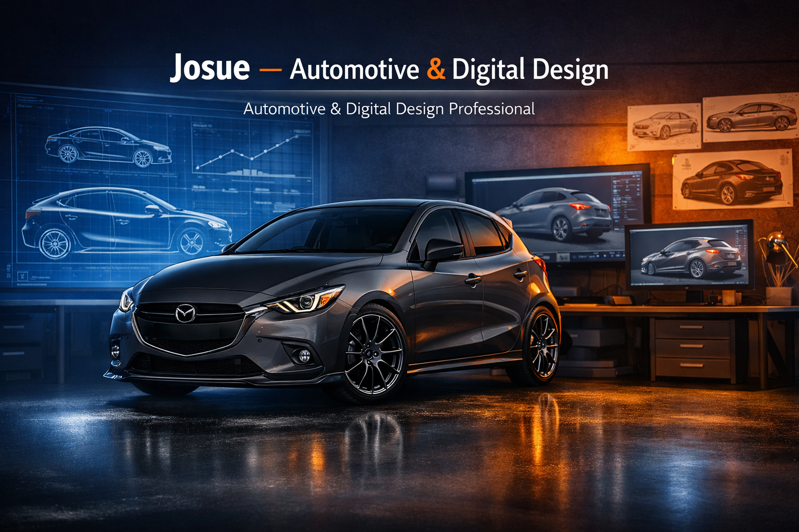
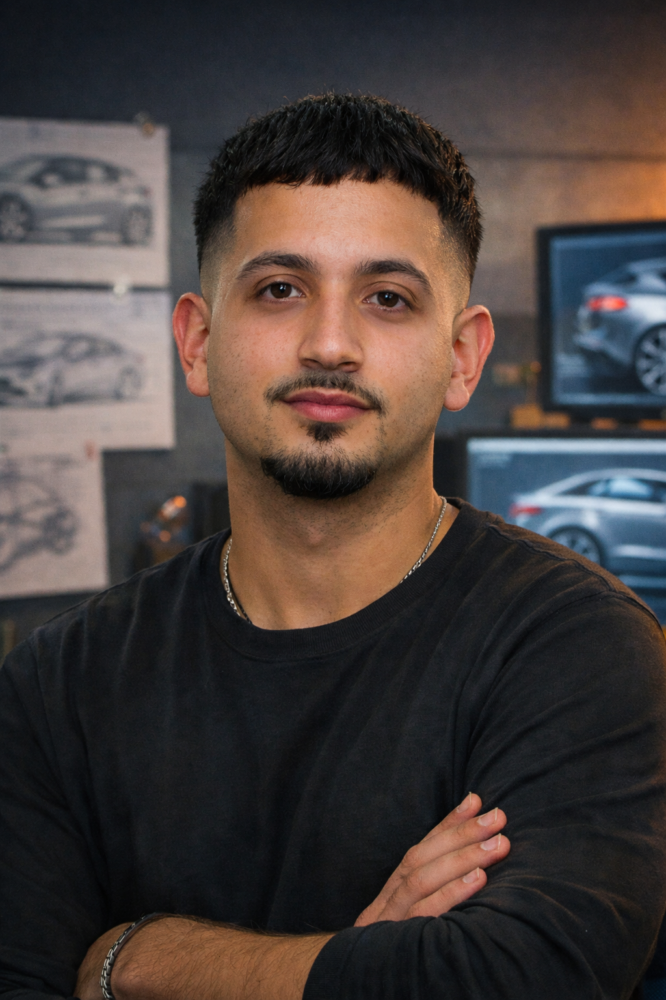
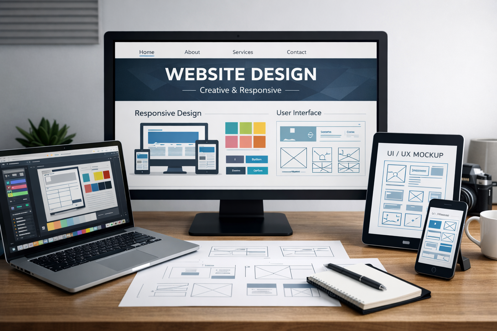
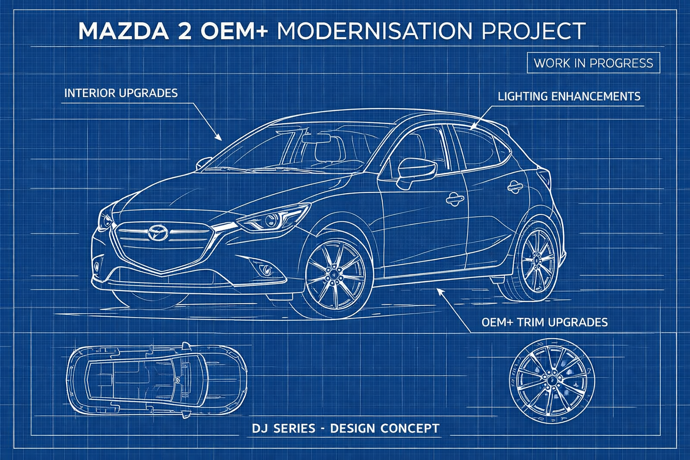
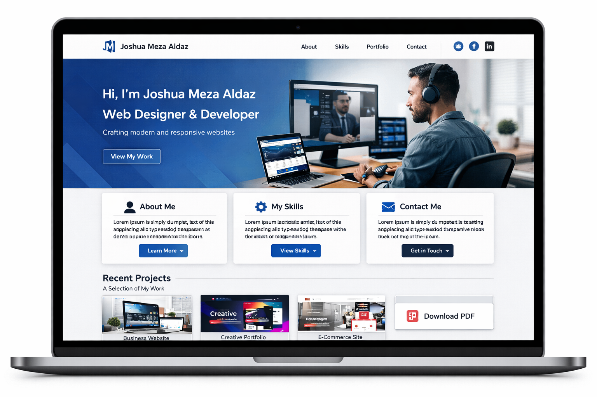
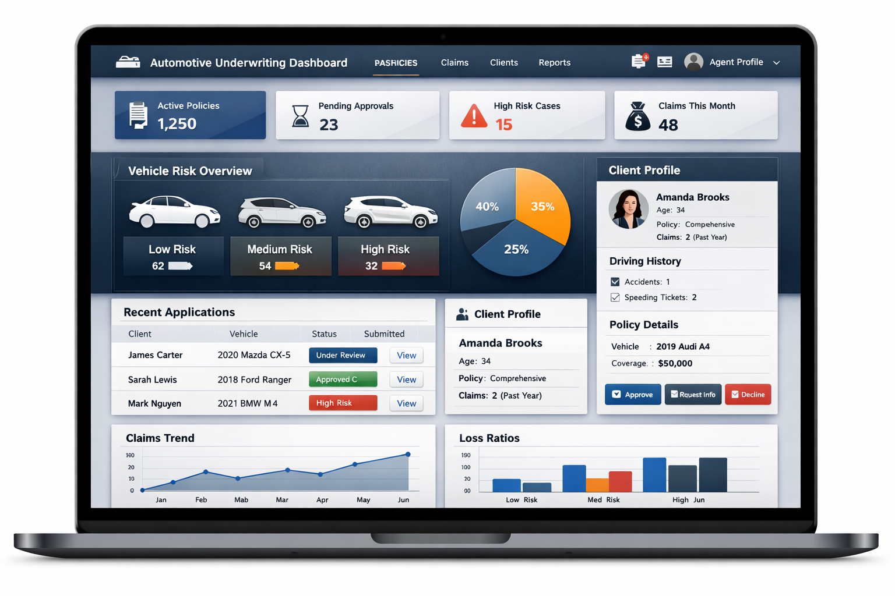
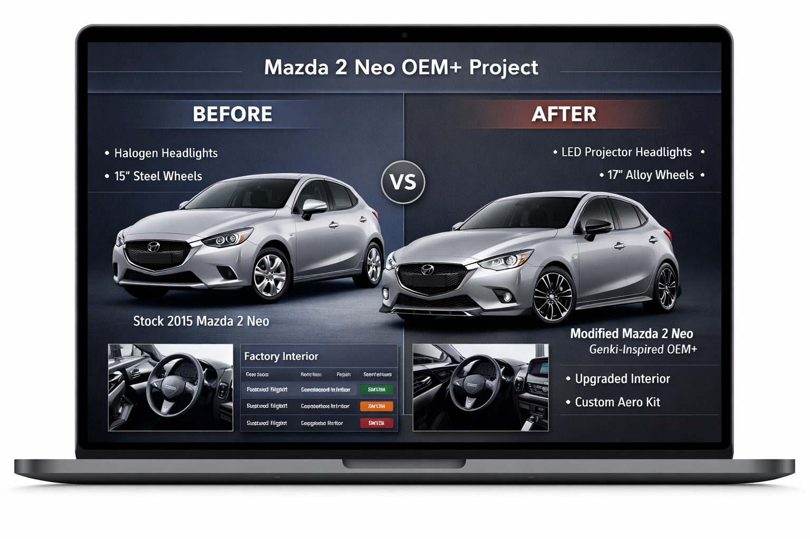

This portfolio showcases my work across automotive and digital design, along with my resume, experience, and the projects that reflect my approach to modern, user‑focused design.
View My Resume

I’ve loved cars for as long as I can remember, and that passion has shaped both my career goals
and the way I see the world. My dream is to become an automotive designer, someone who not only
creates beautiful vehicles, but also understands the business, strategy, and user experience
behind them. I’m especially drawn to OEM+ design, where subtle, thoughtful upgrades enhance a
car’s identity rather than replace it.
I come from an automotive background and currently work for one of Australia’s largest motor
enthusiast companies, where I’ve gained hands‑on experience in underwriting, customer needs,
and the broader automotive industry. This role has strengthened my analytical thinking and
attention to detail, qualities that naturally influence my design approach.
Recently, I discovered a new interest in website design. Learning HTML, CSS, and responsive
layouts has shown me how creativity and structure can work together, a balance that mirrors
automotive design more than I expected. I’ve enjoyed building digital experiences that feel
clean, functional, and user‑focused.
Outside of work, I’m planning to continue developing my own vehicle through a long‑term OEM+
project. It’s another way for me to learn, experiment, and express my passion for automotive
design.
Working as an Underwriter and Event Support Underwriter has given me a deep understanding of how
the automotive industry operates behind the scenes. My role involves assessing risk, reviewing
policies, supporting events, and communicating with customers to ensure they receive accurate,
fair, and well‑informed outcomes. Being part of one of Australia’s largest motor enthusiast
companies has allowed me to stay closely connected to the automotive community while developing
skills that rely on precision, structure, and strong decision‑making.
Every day, I work with detailed information, evaluate unique situations, and make decisions that
require both analytical thinking and a clear understanding of customer needs. This has shaped the
way I approach problem‑solving, teaching me to balance logic with empathy and to communicate
clearly and confidently. These qualities naturally influence my design work as well, whether
I’m building a digital interface or planning an automotive project, I aim to create solutions
that are thoughtful, functional, and user‑focused.
My underwriting experience has also strengthened my ability to interpret data quickly, identify
patterns, and understand how people interact with systems. This perspective has become valuable
as I explore design more deeply, especially in areas like user experience, layout planning, and
creating clear, intuitive structures. Working in the automotive insurance space has given me a
unique blend of industry knowledge and practical insight, and it continues to influence the way
I grow both professionally and creatively.

Studying Website Design has opened up a completely new creative pathway for me, allowing me to
explore how digital experiences are planned, structured, and brought to life. Throughout my
learning, I’ve developed practical skills in HTML, CSS, Bootstrap, responsive layouts, and
user‑focused design principles. What started as a simple curiosity quickly became something I
genuinely enjoy, especially as I began to understand how design and functionality work together
to create clean, intuitive interfaces.
Building this portfolio has been one of the most rewarding parts of the process. It has allowed
me to apply everything I’ve learned, from layout planning and typography choices to responsive
behaviour and accessibility considerations. Creating a multi‑section website taught me how to
think like both a designer and a user, ensuring that every element has purpose, clarity, and
consistency. I’ve also enjoyed experimenting with animations, interactions, and modern web
development practices to make the experience feel polished and engaging.
What I’ve learned in web design has also strengthened my broader interest in automotive design.
Both fields rely on understanding user needs, balancing creativity with structure, and creating
experiences that feel natural and enjoyable. As I continue developing my skills, I’m excited to
explore more advanced techniques and apply them to future projects, both digital and automotive.

View Full Image
My 2015 Mazda 2 Neo project is one of the most meaningful ways I express my passion for automotive
design. What started as a simple daily car has become a long‑term OEM+ modernisation project where
I can experiment, learn, and apply the design principles that inspire me. My goal is to transform
a base model into a clean, Genki‑inspired build that feels modern, refined, and true to Mazda’s
original design language. Rather than changing the car’s identity, I focus on subtle, thoughtful
upgrades that enhance what’s already there.
The project includes planned interior improvements, lighting enhancements, exterior refinements,
and small technology upgrades that bring the car closer to a contemporary OEM+ standard. Each
modification is carefully considered, balancing aesthetics, functionality, and the overall
driving experience. Working on this build has taught me a lot about design flow, proportion, and
how small details can completely change the character of a vehicle.
Beyond the technical side, this project represents my long‑standing love for cars and my dream of
becoming an automotive designer. It gives me a hands‑on way to explore styling, user experience,
and the emotional connection people have with their vehicles. As I continue developing the car,
I see it not just as a personal project, but as an opportunity to grow, experiment, and refine
the design mindset I hope to bring into the automotive industry.

A fully responsive personal portfolio website showcasing my skills in HTML, CSS, and Bootstrap, designed with modern layouts, clean styling, and user‑focused functionality.

A modern automotive underwriting dashboard concept designed to manage insurance policies, risk analytics, and event data through an intuitive, data‑driven interface.

A detailed OEM+ automotive project showcasing modern upgrades, design refinement, and documentation of the transformation from a stock Mazda 2 into a cleaner, more contemporary build.
{kind=link}